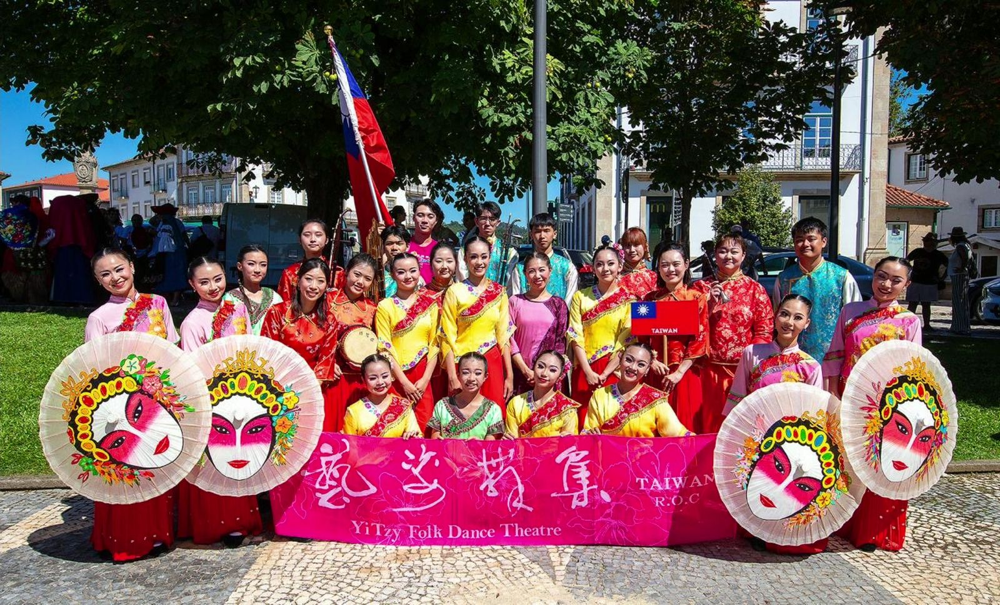
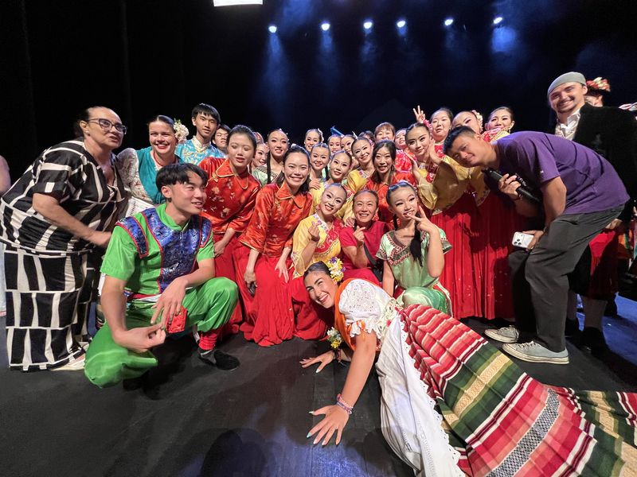
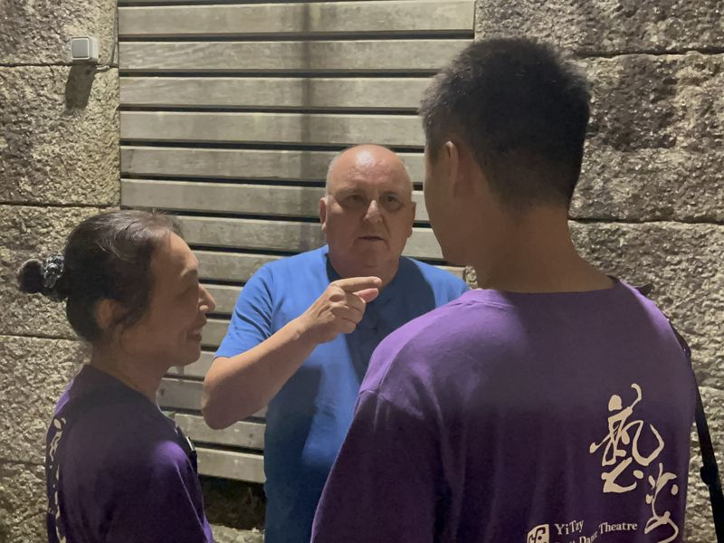
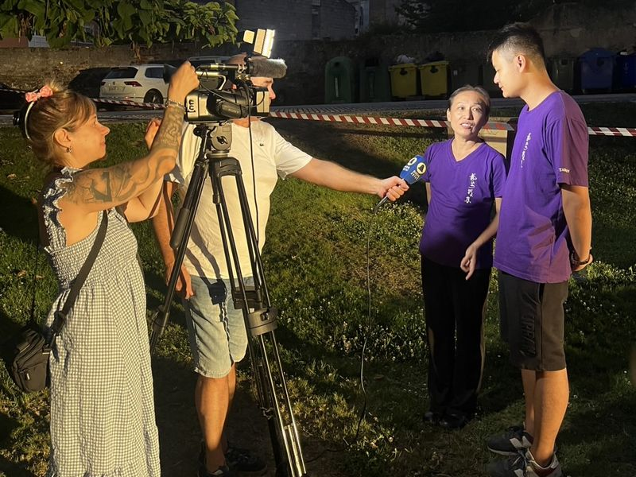
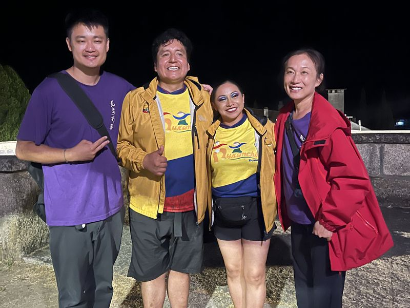
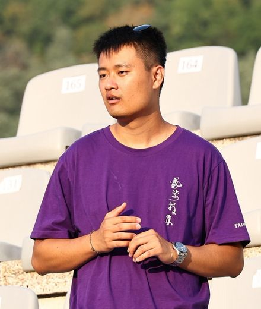

出國健檢：一次線上聊＋一份體質報告——你的團適合哪些補助、搆得到哪些藝術節。聊完不合作，報告也帶得走。
LINE 預約免費出國健檢不只舞團——只要想把作品帶出國的團隊，都是我們的服務對象：
從國小、國中、高中到大學的校園團隊，到社區與半職業團隊——都帶得出去。
「藝術節、交流演出的邀約，要從哪來？」
國際邀約對接
透過藝術節與國際交流網絡，把正式邀約拿到手。
「還沒立案，連申請補助的資格都沒有？」
立案協助
陪你完成登記，一次打開補助的大門。
「計畫書、預算、核銷，誰有時間弄？」
補助企劃
中央加地方疊著申請，文件我們寫、流程我們跑。
「機票簽證保險通關，出了錯怎麼辦？」
隨團統籌
出發到返國，行政與翻譯全程有人扛。
出國健檢：一次線上聊＋一份體質報告——你的團適合哪些補助、搆得到哪些藝術節。聊完不合作，報告也帶得走。
LINE 預約免費出國健檢台灣民俗舞蹈團隊「藝姿舞集」，帶著自己的作品站上伊比利半島的國際民俗藝術節舞台。





這也不是我們第一次在路上——團隊成員曾隨團走過 2014 法國・義大利、2018 荷蘭・比利時的藝術節巡演。

電影製片出身。十多部短片、廣告與 MV 的製片統籌——預算、時程、跨部門溝通；完整跑過政府補助「申請—執行—核銷」的全流程。
2019 年在巴塞隆納開啟與伊比利世界的緣分；2026 年藝姿葡西巡演擔任隨團翻譯與當地對接——31 天、4 個藝術節、20 餘個城鎮。你們負責作品，他負責讓世界看到。
隨團影像紀錄、專案管理等夥伴，依巡演規模編組。
可以，你們正是我們想服務的對象。國際藝術節與文化交流活動，本來就歡迎業餘與社區團隊——舞蹈、合唱、國樂、武術都一樣。
沒關係，立案就是服務的第一步；完成登記，多數補助的大門就開了。
以協助你們取得的補助為基礎；初次健檢免費，先確認適合走哪條路，再談合作。
理想是出發前一年——補助與藝術節都有時程，越早盤點，能疊的資源越多。